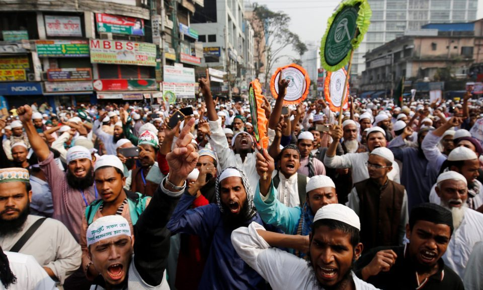
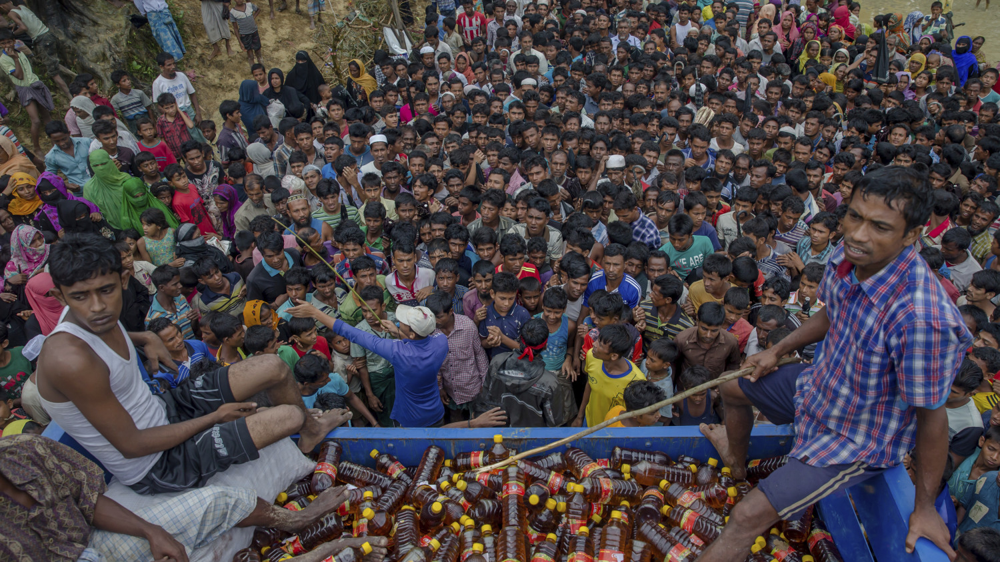
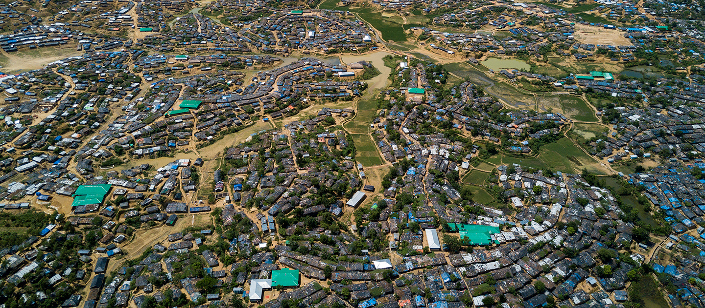

×
For most of its existence, Myanmar’s political history has been heavily dominated by an all-powerful
military,
the Myanmar “Tatmadaw” that has used its force to rule the country.
In an movement toward independence, the Rohingya Muslims allied with
the British during World War II to fight against the local, Japanese-allied, Rakhine Buddhists. For
their
alliance, Britain promised to give an independent Rohingya state.
However, following independence from Britain in 1948, the newly formed “Union Revolutionary Council”
, a
pro-Buddhist military government, took control of the of the predominantly
Buddhist country in 1962 and denied citizenship to the Rohingyas. Attempting to become a
self-sustaining
socialist state, it suspended the 1947 Constitution and the regime placed
significant restrictions on protests and used military control and suppress “ethnic” insurgencies.
President of Burma and the last Saopha of Yawnghwe (image source: www.wikidata.org)
(Text source unhcr.org)The systematic oppression of the Rohingya escalated the ongoing conflict between
the Rohingya Muslim and Rakhine Buddhist communities in the northern Rakhine State, Myanmar,
formerly known as Arakan,
Burma.
Division between the religious sects often resulted in violent attacks on the Rohingya civilians by
Myanmar's security forces and armed clashes between Rohingya insurgents and
security forces in Buthidaung, Maungdaw, and Rathedaung Townships along the Bangladesh border.
 Rohingya protests in Burma (credit: globalresearch.ca)
Myanmar protesters and extremist Buddhist monks from group Ma Ba Tha rally outside the U.S. embassy in Yangon, April 28, 2016. (UNHCR www.refworld.org
The first return of violence came in October 2016 when Burmese border posts along
the Bangladesh–Myanmar border were attacked by the Rohingya insurgent
group, Harakah al-Yaqin, killing at least 40 combatants.
This attack was the first major resurgence of the conflict since 2001.
Further violent Rohingya insurgent attacks erupted in November 2016 and then again on 25 August 2017, when
the Arakan Rohingya Salvation Army, (formerly Harakah al-Yaqin),
launched coordinated attacks on 24 police posts and an army bases, pushing the 2016-2017 death toll to over
200 combatants.
In response, a brutal military crackdown by the Myanmar military ensued upon the
Rohingya. This including deliberately targeting civilians and many other violations amount to the gravest
crimes under international law.
An investigation was begun by the Office of the U.N. High Commissioner for Human Rights after a report of crimes against humanity including conduct of hostilities in flagrant disregard of civilian life and property, unlawful killings, torture and other ill-treatments, sexual and gender-based violence, arbitrary deprivation of liberty and enforced disappearance,
forced labour and forced recruitment of adults and children, forced displacement, confiscation and destruction of property, and denial of
humanitarian assistance amongst others. (OHCHR). UNHCR
This report was released 11 October 2017 detailing the reports of the Burmese military's
"systematic process" of driving hundreds of thousands of Rohingyas from Myanmar "through repeated acts of
humiliation and violence".
The extensive OHCHR March 2018
report by the ASEAN Parliamentarians for Human Rights
(APHR), 43,000 Rohingya parents have been "reported lost, [and] presumed dead" since the August 2017
crackdown.
The Myanmar government has denied extensive evidence of these atrocities and has refused to allow
independent investigators access to Rakhine State, and even punished local journalists for reporting on
military abuses.
Ranjuma was nine months pregnant when she and her family fled persecution in their home in Myanmar. They, like so many others escaping to safety, arrived in Bangladesh, where hope became more heartache. This is their experience. (Source:The New York Times)
As of Feburary 2019, over 730,000 Rohingya have fled to
neighboring Bangladesh since the Myanmar military campaign of ethnic cleansing began in August 2017. (Human Rights Watch, 2019)
Over one million Rohingya refugees have the fled the ongoing
violence in Myanmar in successive waves of displacement since the
early 1990s. Most arrived in the first three months of the
crisis. The vast majority reaching Bangladesh are women and children, and more than 40% are under
age 12. Many others are elderly people requiring additional aid and protection.
They have nothing and need everything.
Nearly all who come during the influx seek shelter in and around the refugee settlements of
Kutupalong and Nayapara in Bangladesh’s Cox’s Bazar district. Some have joined relatives there. The enormous
scale of the refugee arrival influx places an immense challenge on the Bangladeshi host community and
existing facilities
and services. Lack of adequate shelter, water and sanitation, access to basic services, and general
protection considerations such as
safety for the most vulnerable.
UNHCR data on refugee response in Bangladesh. (credit: UNHCR.org)
The Bangladesh government has responded generously throughout the latest crisis. Local Bangladeshi villages have also taken in the new arrivals. They spared no effort to help, straining their already limited resources.
The humanitarian response in Bangladesh remains focused on meeting the massive humanitarian needs and on mitigating the impact of the seasonal monsoon rains. However, additional international support is urgently needed to step up the assistance from purely humanitarian and day-to-day support towards addressing medium-term challenges, includingbg- resilience, education, registration, and programmes to protect the most vulnerable refugees – including children, women and persons with specific needs.
The Bangladesh government has responded generously throughout the latest crisis.
Local Bangladeshi villages
have also taken in the new arrivals. They have spared no efforts to help the Rohingya refugees, further
straining their already limited
resources.
The humanitarian response in Bangladesh remains focused on meeting the massive humanitarian needs and on
mitigating the impact of the seasonal monsoon rains.

(Image Source: Sergey
Ponomarev for The New York Times)
International support is urgently needed to step up the assistance from purely humanitarian and day-to-day
support towards addressing
medium-term challenges, such as resilience, education, registration, and programmes to protect the most
vulnerable refugees – including children, women and persons with specific needs.
The Kutupalong refugee settlement has grown to become the largest of its kind in the world, with more than 600,000 people living in an area of just 13 square kilometres, stretching infrastructure and services to their limits.
Kutupalong Refugee camp, Bangladesh. (credit: unhcr.org)
Instagram images of Kutupalong. Source: instagram.com)
Nayapara refugee camp is in Teknaf, Cox's Bazar, Bangladesh. Located next to the village of Dhumdumia, it is inhabited mostly by Rohingya people that have fled from religious persecution in neighboring Myanmar. This is the second Bangladeshi government-run refugee camps in Cox's Bazar, the first being the Kutupalong refugee camp.